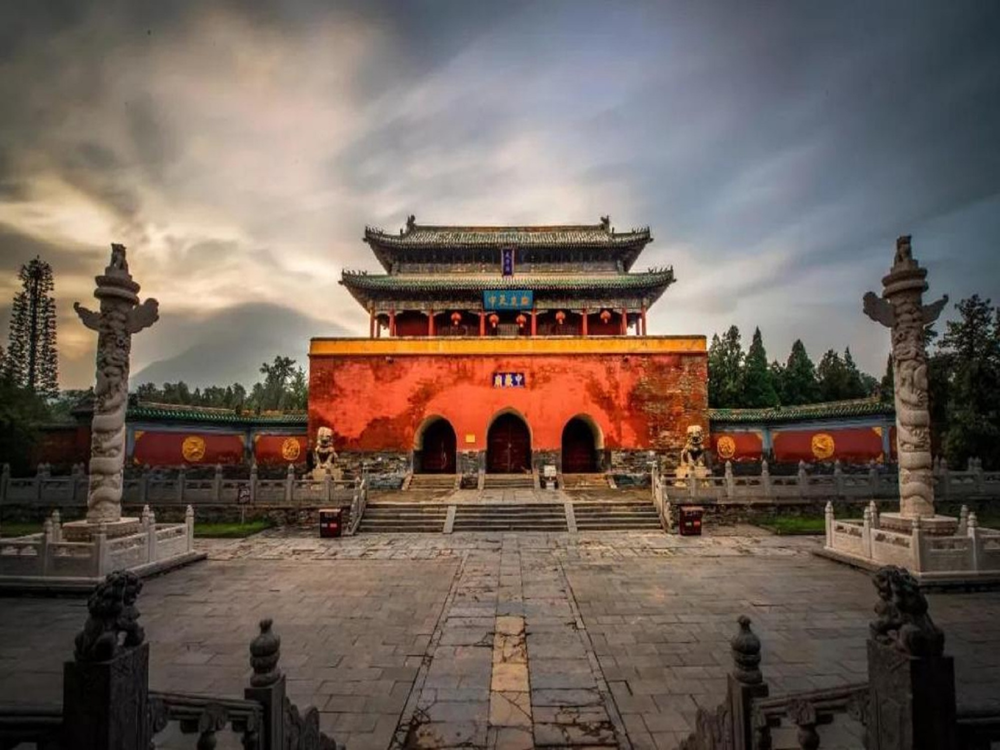
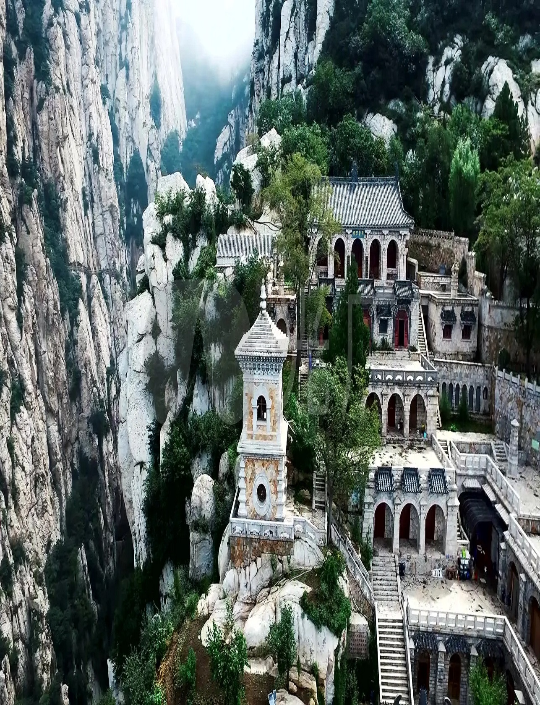
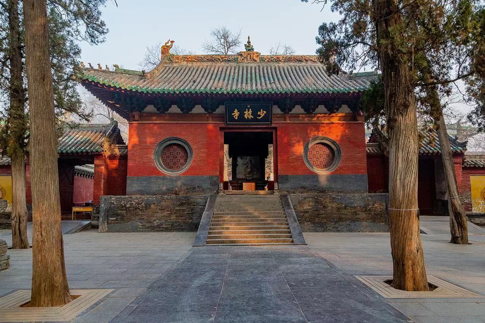
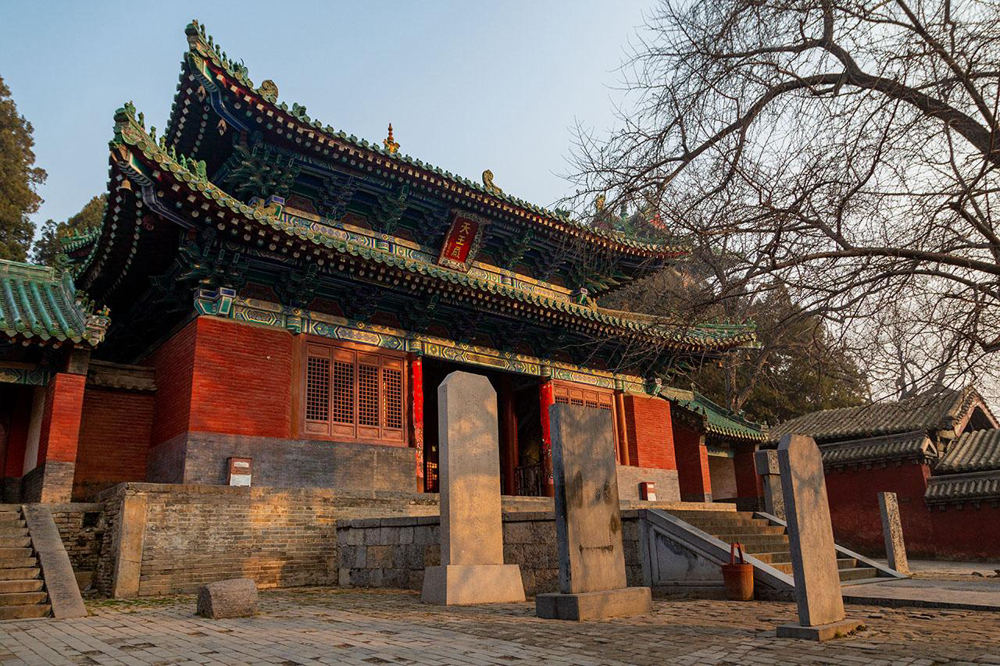
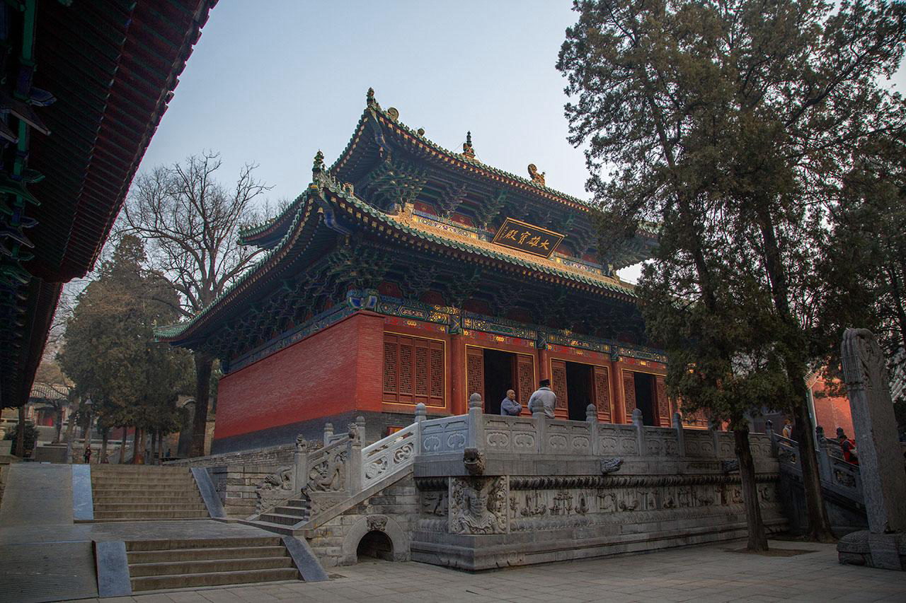
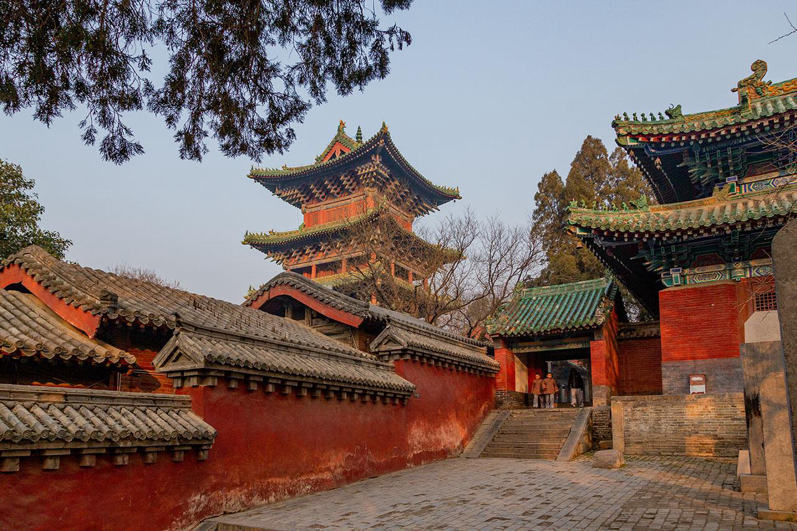
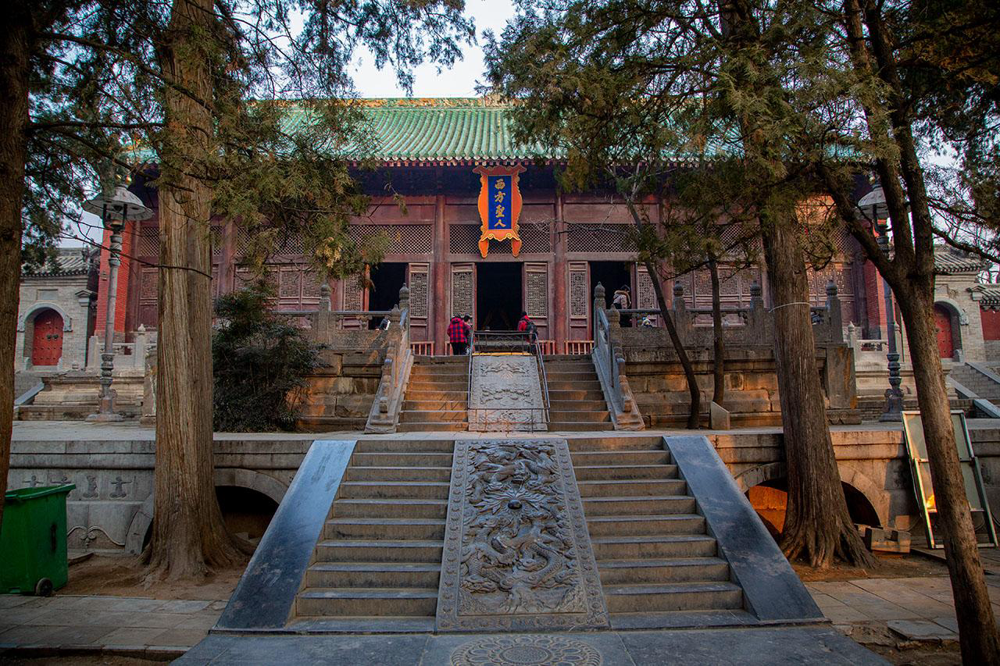
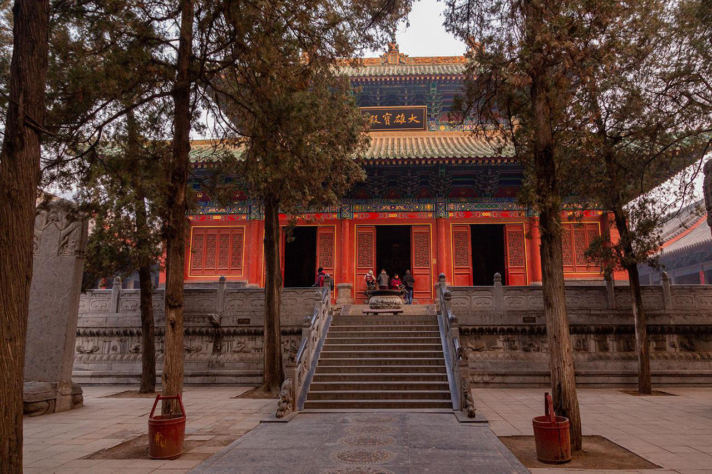

欢迎来到河南登封
Weclome to Deng Feng,henan
登
封
D
E
N
G
F
E
N
G
充
满
武
术
气
息
的
城
市
秦朝，置阳城县和颍阳县（今东华镇）；唐天册万岁二年（696年），
改嵩阳县为登封县。1958年，登封县划归郑州市。1994年5月，登
封县撤县设市。登封市拥有“天地之中”历史建筑群世界文化遗产、
“二十四节气”世界非物质文化遗产、中岳嵩山世界地质公园、少林
功夫等众多世界级名片，是中国重要的文物之乡、武术之乡、大禹文
化之乡，现存文物古迹1497处，其中国家级重点文物保护单位24
处26项，位居全国县（市）单项之首。现有国家5A级景区1个、4A
级景区4个

少林寺

布局结构:
少林寺常住院建筑在郑州登封少溪河北岸，从山门到千佛殿，共七进院落，总面积约57600平方米。主要包括常住院、塔林和初祖庵等。常住院的
建筑沿中轴线自南向北依次是山门、天王殿、大雄宝殿、藏经阁（法堂）、方丈院、立雪亭、千佛殿。另外，寺西有塔林，北有初祖庵、达摩洞、
甘露台，西南有二祖庵，东北有广慧庵。
寺周还有同光禅师塔、法如禅师塔和法华禅师塔等古塔10余座。
地理位置:
少林寺位于郑州市登封市区西北13公里的中岳嵩山南麓，与古都洛阳隔山相望。少林寺背依五乳峰，周围山峦环抱、峰峰相连，形成了少林寺的天然
屏障。嵩山东为太室山，西为少室山，各拥三十六峰，峰峰有名，寺处少室山脚密林之中。
历史文化:
少林功夫是中国武术中体系最庞大的门派，武功套路高达七百种以上，又因以禅入武，习武修禅，又有“武术禅”之称。“少林”一词成为中国传统
武术的象征。少林功夫包含少林七十二绝技、少林拳术、少林派棍术、少林派枪术、少林派刀术、少林派剑术。少林功夫的要旨是禅武合一。少林寺
是佛教禅宗的祖庭，禅宗以明心见性、顿悟成佛为要旨。在佛门眼中，参禅是正道，少林功夫传人释延芫曰：拳勇一类乃是末技，僧众们不过是借练功
习武达到收心敛性、屏虑入定的目的。同时也有强壮身体，益寿延年的效果。
少林寺照片





